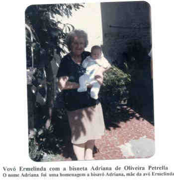

|
|

(Clique na Foto para vê-la no Tamanho Original)")
Ermelinda Barbieri (1907-1998) |
Ermelinda Barbieri

(Clique na Foto para vê-la no Tamanho Original)")
• fotos: Ermelinda e Antônio Isaias - 1926. 
(Clique na Foto para vê-la no Tamanho Original)")
• fotos: Antônio Isaias - Ermelinda -1928.  • fotos: vovó Ermelinda com sua bisneta Adriana de Oliveira. Ermelinda casad[:o::a] Antônio Isaias Petrella, filho de Rocco Petrella e Filomena Di Bacco, em 6 Fev 1926. (Antônio Isaias Petrella nasceu em em 16 Mar 1904 em Sertãozinho, Sp e faleceu em 15 Mai 1944 em Brooklin, Sp.)
Ele faleceu no dia de um jogo do Corinthians. Era um jogo muito bom e importante, ele estava ruim mas lúcido, e assim mesmo falou para a sua mulher Ermelinda - Liga o rádio que eu quero ouvir o jogo. |
 Eventos notáveis em Sua vida foram:
Eventos notáveis em Sua vida foram: